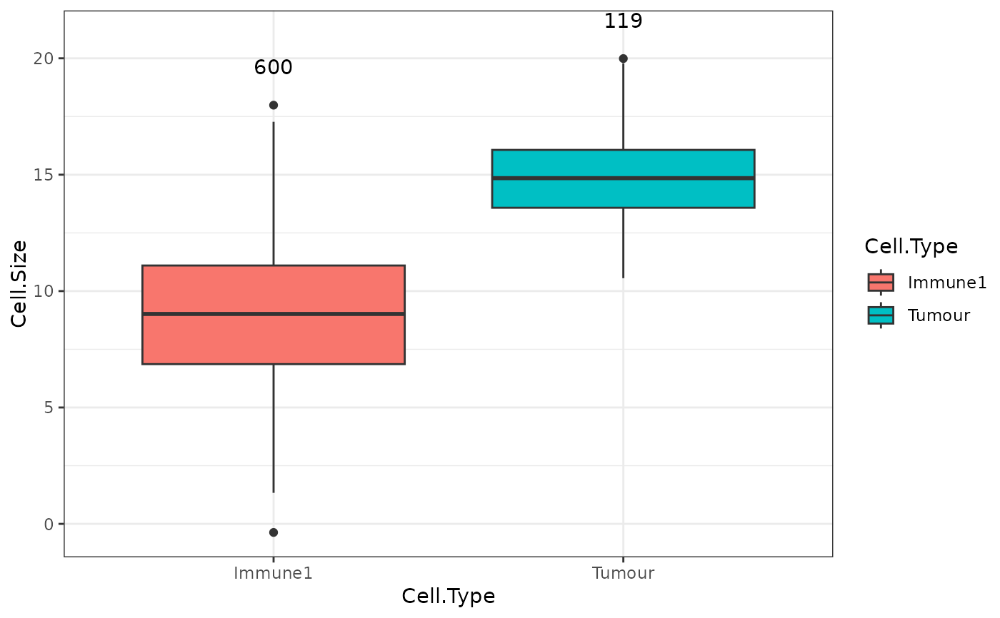

measure_association_to_cell_properties
Source:R/measure_association_to_cell_properties.R
measure_association_to_cell_properties.RdPlots the density or boxplot of a property of two cell celltypes or compares using t test/wilcoxon rank sum test.
Usage
measure_association_to_cell_properties(
spe_object,
property = "Cell.Area",
celltypes,
feature_colname = "Cell.Type",
method = "density",
Nucleus.Ratio = FALSE,
log.scale = FALSE
)Arguments
- spe_object
SpatialExperiment object in the form of the output of
format_image_to_spe.- property
String that is the name of the column of interest.
- celltypes
String Vector of celltypes of interest.
- feature_colname
String that speficies the column of the cell types.
- method
String. The analysis to perform on the selected cell types and property. Options are "density", "box", "t", "wilcox".
- Nucleus.Ratio
Boolean whether the ratio of the nucleus size is of interest.
- log.scale
Boolean whether to log the data.
Value
With method "box" or "density a plot is returned. With method "t" or "wilcox", the text output from the test are returned.
Examples
measure_association_to_cell_properties(image_no_markers,
celltypes = c("Tumour", "Immune1"),
feature_colname = "Cell.Type",
property = "Cell.Size",
method = "box")

measure_association_to_cell_properties(image_no_markers,
celltypes = c("Tumour", "Immune2"),
feature_colname="Cell.Type",
property = "Cell.Size",
method = "t")
#>
#> Welch Two Sample t-test
#>
#> data: Tumour and Immune2
#> t = 27.397, df = 230.97, p-value < 2.2e-16
#> alternative hypothesis: true difference in means is not equal to 0
#> 95 percent confidence interval:
#> 5.448048 6.292373
#> sample estimates:
#> mean of x mean of y
#> 14.797360 8.927149
#>